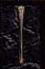

| Original Name | Nom Français |
| Emerald-Topped Staff of Earthquakes | Sceptre tellurique à pommeau d'émeraude |
| Arme à deux mains |
|
 |
|
| Lieu |
| Réservée aux GM Summon |
| Bonus |
| Lance le sort Séisme |
| Commentaires |
| 1 Commentaires |
mage bleu
 Messages: 0 |
*Bouche grande ouverte !!! Je rêve d'avoir ce baton. Lancer le méteor sans mana trop top. J'ai hate d'être assez fort ou être un GM pour l'avoir !!!
Posté le : 25-02-2004 02:21:46 |